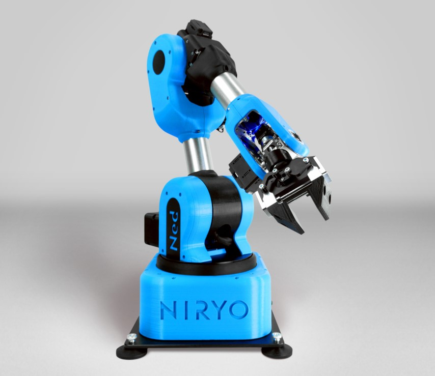

Description du Projet
L'objectif de cette Session de SAE est de prendre en main le fonctionnement du robot Nyrio-NED 2 ainsi que du convoyeur, en vue de mettre en place leur pilotage à travers une carte Arduino et le logiciel Nyrio Studio. Cette démarche vise à établir une relation de type "maître/esclave" entre la carte Arduino et le système constitué du bras robotique et du convoyeur.
Le cœur de cette mission réside dans la réalisation d'une tâche de type "Pick and Place", consistant à saisir des pièces transportées par le convoyeur et à les déplacer habilement à l'aide du bras du NED 2 vers un contenant prédéfini. Cette approche s'inscrit dans une perspective d'automatisation et d'optimisation des opérations de manipulation, démontrant la synergie entre les différentes composantes robotiques. Ce compte rendu détaillera les étapes clés du processus, du contrôle des dispositifs individuels à la coordination harmonieuse entre le bras robotique et le convoyeur, offrant ainsi un aperçu complet du développement et de l'intégration de ce système complexe.
Vidéo du Projet
Fonctionnement
Robot Niryo NED 2 :
- Caractéristiques : Bras robotique avec 6 axes de rotation et une pince pour saisir des objets.
- Programmation : Peut être programmée via Niryo Studio, Arduino, et des langages comme Python.
- Fonctionnalités Avancées : Équipé d'une caméra pour la reconnaissance d'objets et le tri basé sur la couleur et la forme.
Convoyeur :
- Fonction : Transporte les pièces vers le robot.
- Contrôle : Peut être contrôlé par le logiciel du fabricant ou via Arduino.
- Capteur IR : Détecte la présence des pièces et arrête le convoyeur pour permettre au robot de les saisir.
Modes de Fonctionnement
Mode 1 :
- Contrôle Autonome : Le convoyeur est contrôlé par une control box.
- Processus : Le capteur IR détecte une pièce, arrête le convoyeur, et le robot effectue l'opération de Pick and Place.
Mode 2 :
- Pilotage par le Robot : Le convoyeur est contrôlé directement par des blocs fonctionnels du robot.
- Processus : Le robot contrôle le mouvement du convoyeur et réalise les tâches de Pick and Place via ses blocs fonctionnels.
Mode 3 :
- Interface Arduino : Utilisation d'une carte Arduino-Uno pour piloter simultanément le NED 2 et le convoyeur.
- Processus : L'Arduino contrôle le démarrage et l'arrêt du convoyeur, surveille les obstacles via le capteur IR, et déclenche les tâches de Pick and Place.

Conclusion
En conclusion, cette SAE s'achève avec succès, marquant une étape significative dans la maîtrise du robot Nyrio-NED 2 et du convoyeur, ainsi que dans la mise en place de leur pilotage via une carte Arduino et le logiciel Nyrio Studio. L'établissement d'une relation de type "maître/esclave" entre la carte Arduino et le système, composé du bras robotique et du convoyeur.
Au cœur de cette mission se trouve la réalisation accomplie d'une tâche de type "Pick and Place", démontrant avec habileté la saisie précise de pièces transportées par le convoyeur et leur déplacement à l'aide du bras du NED 2 vers un contenant prédéfini. La difficulté a été la prise en main des différents logiciels notamment la programmation par bloque fonctionnel ainsi que les disfonctionnements matériels qui nous a permis de collaborer avec d’autre groupe.
Le compte rendu exhaustif présenté ici a méticuleusement documenté chaque étape clé du processus, de la manipulation des dispositifs individuels à la coordination entre le bras robotique et le convoyeur. Cette documentation complète offre un aperçu détaillé du développement et de l'intégration de ce système complexe, soulignant la réussite de notre binôme dans la réalisation de ce projet.
En clôture, nous tenons à exprimer notre profonde gratitude envers notre enseignant, qui, par son encadrement et son expertise, a rendu possible le succès de cette SAE. Sa passion pour l'enseignement et sa volonté de nous apprendre. Nous reconnaissons l'importance de cette expérience dans notre formation et sommes reconnaissants de l'opportunité qui nous a été offerte. Ce succès ne fait que renforcer notre engagement envers l'apprentissage continu et l'application pratique des connaissances acquises.